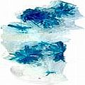

Obturações dentárias
Tique-taque de potenciais bombas-relógio tóxicas, em sua boca?
É natural carregar metais ou plástico em sua boca? E ainda mais importante, é saudável? E ainda mais crucial e fundamental, é mesmo necessário encher os buracos dos dentes? Antes que esse sítio venha a tratar de todas essas questões em maior detalhe, por enquanto, veja evidência condenatória abaixo. De fato o Dr. Dietrich Klinghardt, M.D., PhD, resumiu brilhantemente a questão afirmando que “Todos os materiais odontológicos são potencialmente tóxicos, com uma vasta gama de reações individuais.” E o dentista Dr. Nathan Cochrane assinalou uma importante falha no “paradigma da obturação” quando disse que “trabalhando como dentista observo como os dentes com obturações frequentemente enfraquecem.” Além disso, há outro problema básico com materiais artificiais de obturação: nenhum deles, até mesmo o “melhor”, proporcionará um ajuste perfeito. Em outras palavras, as obturações não vedam perfeitamente com a dentina existente, assim possivelmente permitindo que bactérias e matéria estranha se infiltrem e deteriorem o dente embaixo, um processo seguido por contração normal (no caso de obturações com resina composta) ou por expansão normal (no caso de obturações com amálgama), e as amálgamas conseguem rachar o dente...
Observe que os tratamentos de canal, pontes e coroas, em razão da vastidão do assunto, são tratados em suas seções próprias, veja visão geral de todas as seções “Convencionais” em Convencional: o arsenal terapêutico da moderna odontologia.